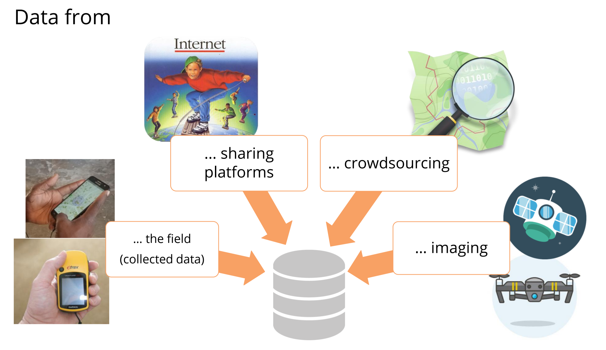
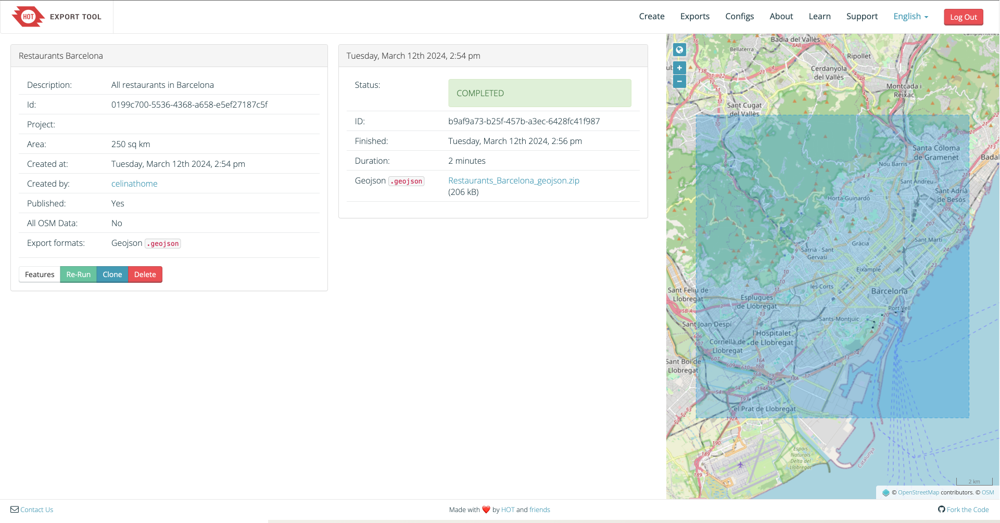

Data sources#
To find the appropriate data you are looking for, you can search online data sharing platforms. Some important ones are highlighted below.
What to look out for when looking for data#
Data source: Always make sure to use data from trusted data sources. The organisation that shared the data is the best indicator. Apart from that, use of the data in trusted contexts or also download counts can be good indicators.
Data size: Sometimes you can access data in different scales, resolutions etc. Make sure to select a data set that fits your purpose and can be easily processed by you. For example, if you only need data about a specific region, only select the data of this administrative area.
Data format: Maybe there are different data formats available that you can choose from. Think about your needs and what is the most practical for your use and potentially also sharing purposes.
Data capture date: Make sure to check when the data was collected and if the collection data is in line with your needs. Check if there is potentially more up-to-date data available from another source.
Data license: What kind of license does the data have? How can you use and share it and how do you need to cite the data source? Make sure to check the licensing and to follow the respective regulations to avoid difficulties.
{kind=link}

The data to create maps or perform GIS analyses can come from various sources (Source: CartONG)#
Overview of useful data repositories#
General geodata#
Name |
Data |
Link |
|---|---|---|
Natural Earth |
Administrative and physical geography |
|
Geonames |
Administrative geodata |
|
OpenAfrica |
Open-source data on Africa |
|
DivaGIS |
Different data, e.g. administrative, roads, population, elevation, climate |
|
Open Topography |
Data on topography |
|
OSM Boundaries |
Administrative boundaries (need to authenticate via your osm account) |
|
GADM |
Administrative boundaries |
Humanitarian data#
Name |
Data |
Link |
|---|---|---|
Humanitarian Data Exchange |
Various open data from different humanitarian organisations |
|
Healthsites |
Locations of health facilities |
|
UNHCR Geoservices |
Data on displaced populations |
|
Waterpoint |
Data on waterpoints |
Disaster data#
Name |
Data |
Link |
|---|---|---|
MapAction |
Emergency mapping resources |
|
Data and map download platform for humanitarian use |
||
ACLED |
Conflict data |
|
GDACS |
Disaster database |
|
ZKI/DLR |
Flood extents, damage extents, earth observation data |
|
WFP Vulnerability Analysis and Mapping |
Data on food security, hazards, conflicts, climate |
Population data#
Name |
Data |
Link |
|---|---|---|
WorldPop |
Population estimates |
|
GHSL |
Global settlement data |
|
HRSL |
Settlement layer based on earth observation and Facebook data |
https://research.facebook.com/downloads/high-resolution-settlement-layer-hrsl/ |
GRID3 Settlement extents and settlement points |
Settlement extents data |
|
Pangea |
Environmental & biosciences data |
|
United Nations Population Fund |
Data on sexual and reproductive health and population trends |
Buildings data#
Name |
Data |
Link |
|---|---|---|
World Settlement Footprint |
World Settlement Footprint |
|
VIDA building footprint |
Combined Google and Microsoft building footprint datasets |
https://beta.source.coop/repositories/vida/google-microsoft-open-buildings/download/ |
Open-building |
Google building footprints |
Remote sensing/earth observation data#
Name |
Data |
Link |
|---|---|---|
Global Forest Watch |
Data on global forests |
|
OpenAerialMap |
Crowdsourced drone imagery |
|
USGS Earth Explorer |
Satellite data from multiple sources, including Landsat and Sentinel |
|
NASA Shuttle Radar Topography Mission (SRTM) |
Global elevation data |
|
Earth Observe |
Digital elevation model on a global scale |
|
Copernicus |
Earth observation data |
|
GlobCover |
Raster data on land cover |
OpenStreetMap data#
OpenStreetMap (OSM) is a collaborative project that aims to create a free and editable map of the world. Unlike traditional maps, which are often proprietary and controlled by commercial entities, OSM allows anyone to contribute and edit map data, resulting in a detailed and constantly evolving map of roads, trails, landmarks, and more. With its open-source nature and global community of contributors, OpenStreetMap has become a valuable resource for a wide range of applications, from navigation and urban planning to disaster response and humanitarian aid.
There are multiple ways to get OpenStreetMap (OSM) data as a vector file into QGIS. The three most common and easy-to-use ways are geofabrik.de, HOT Export Tool and QuickOSM QGIS Plugin. Each of the options has both advantages and disadvantages.
Tip
If you wish to practice how to export OSM data, you can do the Exercise 4: Exporting OSM Data
As you can see, Geofabrik is great if you want to get complete OSM datasets for whole countries or regions.
Advantages |
Disadvantages |
|---|---|
+ Quick access to complete OSM datasets |
- If one is only interested in specific features or regions (other than countries), not optimal |
+ Very up-to-date OSM exports |
- Large file size |
+ Clear documentation of which OSM features are contained in each shapefile |
- Only available as shapefile |
HOT Export tool As you can see, the HOT Export tool offers a good mix of flexibility and quick access to OSM data. However, there are quite some steps involved until the data is in QGIS.
Advantages |
Disadvantages |
|---|---|
+ Good options for data selection |
- Many steps involved |
+ Many different data formats available |
- Only fixed option for data selection |
+ Easy to use |
|
+ Query can easily be repeated |
QuickOSM Plugin
Advantages |
Disadvantages |
|---|---|
+ Query can be tailored for very specific data |
- Requires knowledge of OSM data model |
+ Data loads directly in QGIS |
- Building queries can quickly become complex |
+ Query can easily be repeated |
Tip
It is by default possible to add the OSM base map to your project. Click on Layer -> Add Layer -> Add XYZ Layer…. Choose OpenStreetMap and click Add (Wiki Video).
QuickOSM plugin#
The QuickOSM plugin makes it easy to download data from OpenStreetMap and add it to your QGIS project.
Install the QuickOSM plugin by clicking on the
Plugintab, ->Manage and Install Plugins…->All-> Search for “QuickOSM” ->Install PluginTo open QuickOSM click on the
Vectortab ->QuickOSM->QuickOSM
To work efficiently with QuickOSM, it’s essential to have a basic understanding of the OSM data model. Here’s a brief explanation:
Firstly, all data in OSM is organized using a key and value system. A combination of a key and its corresponding value is referred to as a tag. For instance, consider the key ‘amenity.’ According to the OSMWiki, “‘amenity=’ describes useful facilities such as toilets, telephones, banks, pharmacies, prisons, and schools.”*. Notably, a key can have multiple values, with ‘amenity’ alone having 8911 different values. Typical examples of values for amenities include schools and hospitals. When searching for data on OSM, it’s crucial to identify the relevant keys and values representing the desired features. Useful resources for this purpose include taginfo and the OSM Wiki article about Map features.
Secondly, a feature in OSM can have multiple tags, each comprising a key and its corresponding value. This means that sometimes, multiple key-value pairs are required to retrieve all the desired data. For example, let’s consider hospitals. While all hospitals should ideally have the tags ‘amenity=hospital’ and ‘Health=Hospital,’ some may only have one of these tags. To ensure comprehensive data retrieval, it’s advisable to use both tags when searching for hospitals.
Follow the steps to fetch for data:
Select a Key and Value from the dropdown list. If you are unsure, check here:

Choosing key and value in QuickOSM.#
Limit the area by typing in the name of your area of interest. You can also choose from the dropdown
Canvas ExtentorLayer Extentinstead of a name of a city or country.Unfold the tab
Advanced. Only select the datatypes you are expecting to minimize errors.

Running the QuickOSM plugin.#
Click on
Run query.
How to fetch data for multiple queries
If you want to get more data in the same area, you can add a query by clicking
on the  . Be careful choosing the right logical operator
. Be careful choosing the right logical operator
And or Or. If you are unsure check the page non-spatial queries
on the wiki. There is an example of this in the Module 2 OSM exercise
HOT Export Tool#
With the Humanitarian OpenStreetMap Team (HOT) Export Tool you can download customized extracts of up-to-date OSM data in different file formats. It offers a browser-based tool to download OSM data with good options to specify region, time, feature type and data format.
Go to the HOT Export tool. To use the tool you need an OSM account.
If you have an OSM account you can log in directly into the HOT Export tool by clicking on
Log in. If you don’t have one, you’ll need to create one: click onLog inand in the new window select the option to create a new account.After logging in, click the
Start Exportingbutton on the homepage to load the Export Tool

The HOT Export Tool.#
First add a name and a brief description of your export. Then click on
Next.Choose the file format fitting to your needs. It is recommended to use GeoPackage but Geojson or shapefile can be used as well. Click on
Next.The easiest way to choose the feature type you want to download is using the tag tree. (The YAML option is more flexible but more advanced, so we will focus on the first option.)
There are multiple ways to select your area of interest.
You can search for it in the search bar in the top right corner.
Zoom in the map to your area and click on
This view.Zoom in and draw a bounding box by clicking on
Box.Zoom in and draw free hand a polygon by clicking on
Draw.Or you can upload a layer as extent (only .geojson in the crs WGS84!). Click on
Import.
Then click on
Next. It will look something like this:

An Example for the HOT Export Tool.#
Click on
Create Export. It will then run for a few minutes, looking like this:

The HOT Export Tool is running.#
After being finished, the status will change to
COMPLETEDand you can download your file by clicking on the link:
{kind=link}

Downloading data from HOT Export Tool.#
Self-Assessment Questions#
Test your knowledge
Take a moment to recapitulate what you’ve learned in this chapter by answering the questions below:
What criteria should you check when selecting geodata for a project? (e.g. source trustworthiness, size / resolution, format, date, license)
Answer
Source/Trustworthiness: Use data from reputable organizations, trusted platforms, or sources known for good quality. Check who published the data, how it was validated, and how often it is used.
Data size, resolution and scale: Make sure the spatial resolution (or detail) meets your project’s needs. Don’t pick overly coarse or overly fine data unnecessarily (which might slow processing).
Format: Some formats may be easier to use / more compatible (e.g. GeoPackage, shapefile, GeoJSON). Choose a format that is practical for your tools and sharing.
Date/timeliness: When was the data collected? You want data whose timeframe matches your project requirements. Older data may no longer reflect current conditions.
License/usage rights: You need to check how the data can be used, shared, and whether attribution is required. The license may restrict commercial use or derivative works.
Why is the “data license” an important consideration when using geodata?
Answer
The data license dictates what you are legally allowed to do with the data: whether you can use it freely, modify it, share it, or publish derivatives.
Ignoring license terms can lead to legal or ethical issues (e.g. violating copyright, failing to give required attribution) or prevent you from distributing your results.
Some licenses are restrictive (non‑commercial only, no derivatives, or require share-alike), so you have to ensure your intended use complies with those terms.
How does the date of data capture affect its usefulness? Give an example of when older data might mislead your analysis.
Answer
The date matters because landscapes, infrastructure, land use, population, etc. can change over time. If data is outdated, it might no longer reflect reality.
Using older data may mislead your analysis if conditions have changed:
For example: Suppose you use road network data from 10 years ago to model shortest paths or accessibility today. If many new roads have been built or some roads have been closed, your routing or accessibility analysis would be incorrect.
Or, using land cover data from many years back: an area once forested may now be urbanized, so interpreting habitat or deforestation trends would be misleading.
Thus, alignment of data capture date with study period is important.
What might be the challenges when integrating data from different sources (e.g. up-to-dateness, different projections, formats, coverage, or metadata completeness)?
Answer
When combining datasets from different sources, challenges include:
Different timeliness/currency: One dataset might be recent, another old. This mismatch can lead to misleading comparisons.
Different projections/coordinate systems: Datasets may use different Coordinate Reference Systems, so you have to reproject them to a common CRS.
Coverage mismatches: One dataset might cover only part of your area of interest or have gaps.
Metadata completeness/quality: One dataset may lack metadata (e.g. no date, no documentation of how data was collected), making it hard to assess quality or compatibility.
Attribute schema differences: Differences in attribute naming, units, field types, classifications can complicate merging or comparison. For example, slight differences in the name of a feature (e.g. a district or state) can make joining two dataset a lot more difficult, as it will have to be adjusted manually.
When performing an analysis, make sure to be transparent about the challenges or shortcomings of the different datasets. This will ensure that the decision-making process is informed better and also ensure the reproducibility and adaptability of your analysis.